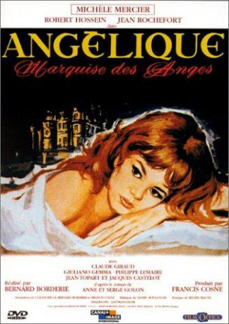

gesehen am 28.01.2018
gesehen am 28.01.2018Alternativ: Angelique gesehen am 28.01.2018
 
 IMDB-Wertung: 6.9 / 10
IMDB-Wertung: 6.9 / 10  Metascore:
Metascore: 
In this first part of the Angélique cycle, set in Mid-17th century France under the young Sun King Louis XIV, still struggling for his throne, while beggars and brigands roam the country, Angélique de Sancé de Monteloup, fifth child of an impoverished country nobleman in the Poitou marshlands, expected to struggle for a meager subsistence, educated in a nunnery, is betrothed at 17 to Joffrey de Peyrac, the 12 years older rich but cripple Comte de (count of) Peyrac de Morens and seigneur (Lord) of Toulouse, scarred in the face and said to be a sorcerer, in fact practicing oriental mining techniques which make his vast fortune. For the sake of her family, Angélique reluctantly agrees to the match but refuses the advances of her husband, who does not enforce his conjugal rights, wishing only to win her heart. As Angelique gradually discovers virtuous Peyrac's remarkable talents as scientist, musician and philosopher, she falls passionately in love with him. Joffrey's unusual way of life ...
Jahr: 1964
Dauer: 116 Minuten
FSK: 12
Land: Frankreich Studio: GloriaTonspuren:
Untertitel:
Auflösung: 1080p (1920x816) Größe: 8878 MB
Genre: Drama, Abenteuer, Liebe, Geschichte
Regisseur: Bernard Borderie
Drehbuch: Hasraf Dulull
Soundtrack: Michel Magne
Darsteller:
 Michèle Mercier als Angélique Sancé de Monteloup
Michèle Mercier als Angélique Sancé de Monteloup Robert Hossein als Jeoffrey de Peyrac
Robert Hossein als Jeoffrey de Peyrac Jean Rochefort als Desgrez
Jean Rochefort als Desgrez Giuliano Gemma als Nicolas
Giuliano Gemma als Nicolas Philippe Lemaire als De Vardes
Philippe Lemaire als De VardesDatei: X:\6-Hexalogie(A-Z)\Angelique\Angélique 1 (1964, FSK12, 1920x816).mkv seit 09.01.2018
Festplatte: HD Collection-3(N-Z)-6(A-Z)
 Es gibt insgesamt 9 Filme in der Gruppe '6-Hexalogie(A-Z)\Angelique'
Es gibt insgesamt 9 Filme in der Gruppe '6-Hexalogie(A-Z)\Angelique'